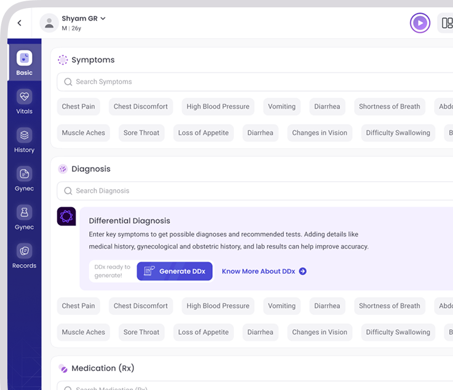
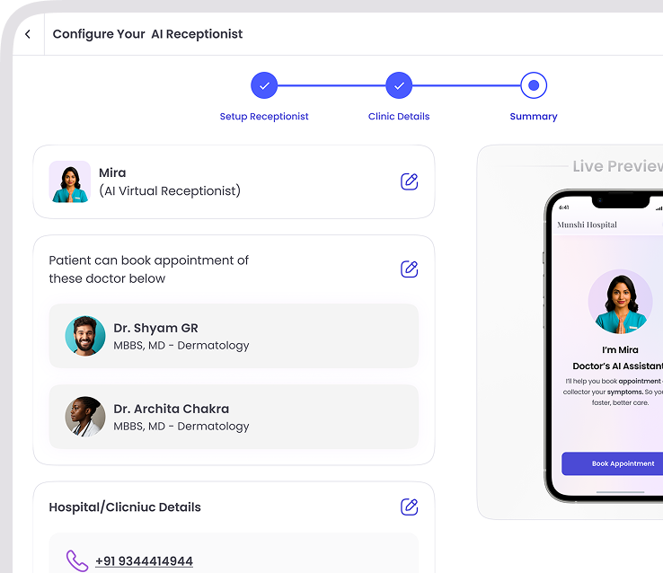

DoctorAgent gives you real-time differential diagnoses, drug interaction alerts, lab interpretation, and evidence-based suggestions — grounded in Indian clinical guidelines.
Real-time clinical co-pilot for the consultation room.
Auto-structured SOAP notes from voice or ambient capture.
A virtual front desk that handles the rhythm of OPD.
DoctorAgent is grounded in Indian clinical protocols, formularies, and guidelines from ICMR, NHM, and major Indian medical associations. Cited, auditable, and always one tap away.

Amaya listens to the consultation — or reads your dictation — and produces a clean, structured SOAP note with ICD-10 tagging. You sign off in seconds.
Reminders, reschedules, queue updates, no-show recovery — all handled on WhatsApp, in your patient native language. Your human staff focuses on the patients in the room, not the phone.

No. DoctorAgent surfaces ranked differential diagnoses with the evidence behind each, drug-interaction alerts, and lab interpretation. Every clinical decision stays with the licensed clinician — DoctorAgent is a co-pilot, not a replacement.
Indian clinical sources first: ICMR, NHM, major specialty associations (CSI, API, IPS, RCOG India). Every cited answer links to its source so you can audit it.
No. Amaya activates only when you tap to start. The patient is informed before each capture, and you can review and delete the audio at any point. Recordings are encrypted and auto-purged after the SOAP note is finalised.
Yes — opt-in per patient. Some patients prefer a phone call from a human. The Receptionist Agent respects channel preferences set in the patient profile.
DoctorAgent is benchmarked monthly against held-out clinical cases. Top-3 DDx hit rate is over 89% on common Indian primary-care presentations. Senior clinicians always remain the decision-maker.